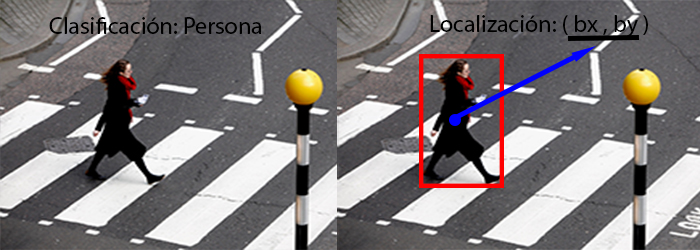

Motivación
El área de visión por computadora se ha ido popularizando conforme avanza el desarrollo tecnológico, motivada principalmente por emular la visión humana. Conforme una persona se desarrolla aprende fácilmente a detectar, clasificar objetos, colores y hasta predecir movimientos, todo esto y más lo hace sin sentir que el acto de visualizar requiera de toda su energía o que una gran complejidad esté involucrada en el proceso.La realidad es que el cerebro humano invierte de manera directa o indirecta aproximadamente la mitad del cerebro para hacer esto posible. En términos digitales podría decirse que procesa alrededor de 60 imágenes por segundo, imágenes compuestas por puntos que en el mundo digital conoceríamos como pixeles. Emular las actividades que para los humanos son triviales para una computadora siempre han representado un gran reto y el área de visión no es la excepción hoy en día existen técnicas del área de matemáticas y computación creadas para simular el proceso de visión en computadoras y en ente trabajo se ilustrará una de las más poderosas que muestra como una computadora puede ver los objetos del mundo real.
Introducción
Llego el momento de subir el nivel, en la publicación que subí llamada "¿cómo ven las computadoras?" les comentaba sobre todo el procesamiento que se lleva clasificar una imagen y tal, además mostraba un ejemplo sobre la arquitectura de la red neuronal que permitía clasificar objetos en una fotografía, en este ejemplo ya estamos hablando de un ejemplo real que hará que se les pongan los pelos de punta y vean la película de terminator como algo un poco más real. (terminator 2 que es la más chila ;) ) El proyecto se tratará sobre una arquitectura que permite como lo dice el título localizar y clasificar objetos en el mundo real, resultara muy interesante por que mostraré algunos ejemplos.
localización y clasificación de objetos
Clasificación y localización de objetos
De aquí pal' real
- Aprendizaje supervisado
- Regresión lineal
El primer paso es abordar el tema de la localización de los objetos

En la imagen de la izquierda podemos ver una primera version que corresponde a clasficar un objeto que aparece en la imagen el proceso de clasificación etiqueta el objeto que reconoce en la pantalla basada en su basa de conocimientos que para nosostros los humanos serian aquellos objetos que a lo largo de su vida ha aprendido a reconocer y se encuentran almacenados en su cerebro, para la computadora seria un conjunto de entrenamiento con diferentes objetos que el algoritmo aprende a reconocer para nuestro algoritmo reconoceremos 4 : autos, personas, motocicletas y el fondo (entorno que nos rodea pueden ser edificios arboles cielo etc.) los humanos dificilmente pueden evitar reconocer ciertos objetos cuando realizan una actividad pero las maquinas solo reconocen los que nosotros le hemos programado para reconocer aunque para esta actividad no es necesario que reconozca nada mas. y del lado derecho una vez clasificado el objeto sigue la etapa de localizarlo en la pantalla. para localizar se debe establecer una referencia en el objeto con al cuadro de la imagen. como se puede observar en la persona aparece un circulo azul con coordenadas que por el momento llamaremos (bx,by) correspondientes al centro de la persona con respecto al rectangulo rojo que la encierra. una forma para que la gente que no esto es muy importante por que nos dira exactamente donde se encuentra una vez que la reconozca hasta este momento todo parece muy facil y facil de digerir pero para poder llegar a esos resultados se debe atravesar un proceso muy complejo cada una de las etapas es importante y esta estructurada de manera diferente por lo que el siguiente paso es formalizar lo que acabo de simplificar con imagenes. primero el tema de la clasificación de objetos. basicamente para clasificar objetos la estrucutra de la red neuronal es de la siguiente manera:Todo lo que se encuentre debajo de esa línea gris que acabo de dibujar será pura explicación dura y directa de algoritmos de aprendizaje, de manera que si no estas preparado para ver matemáticas de las que llevan letras del alfabeto griego y números en el mismo renglón. Picale a este enlace y te Redirigirá a un playlist de shakira cuando estaba gordita y cantaba bien (pies descalzos y todas esas)